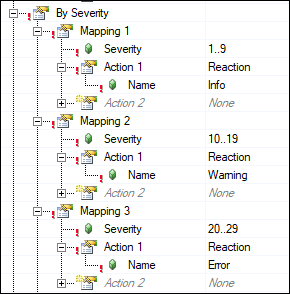
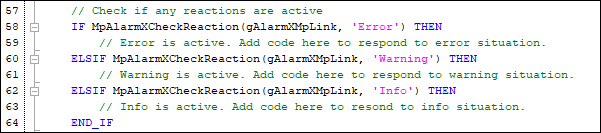

mapp AlarmX Framework - Alarm Mapping
The Framework establishes three alarm reactions by default within the alarm mapping:
1. Info (severity 1 – 9)
2. Warning (severity 10 – 19)
3. Error (severity 20 – 29)
The MpAlarmXCheckReaction() function is called for each reaction within the AlarmMgt task.
The following optional changes should be considered to align the Framework with the application requirements:
- Adjust the severity ranges
- This is done in the AlarmX.mpalarmxcore configuration file
- Rename the reactions
- This is done in the AlarmX.mpalarmxcore configuration file
- If you do this, remember to change the name in the MpAlarmXCheckReaction() function calls in AlarmMgt.st to the new name (starting at line 57).
- Add / remove reactions
- This is done in the AlarmX.mpalarmxcore configuration file
- If you do this, remember to add / remove function calls of MpAlarmXCheckReaction() in AlarmMgt.st accordingly (starting at line 57).
- Check for the reactions elsewhere in code
- Typically the MpAlarmXCheckReaction() function is called from other tasks within the application. For example, the axis control task might check for the “Error” reaction to determine whether to send a stop command to the axes. Therefore, copy / paste the IF statements containing MpAlarmXCheckReaction() from AlarmMgt.st as needed around the application.

